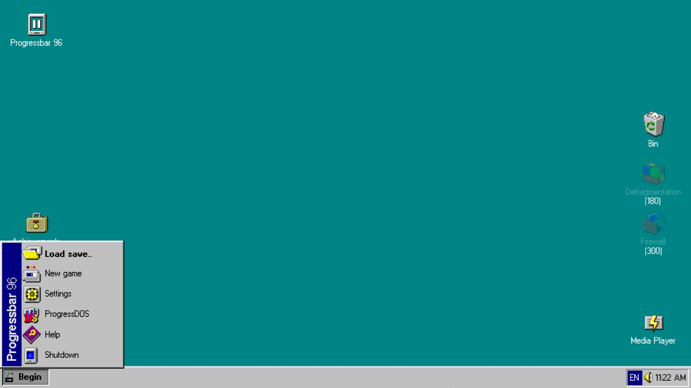
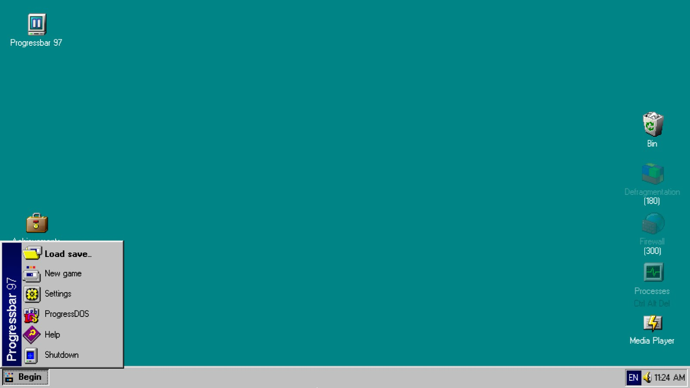
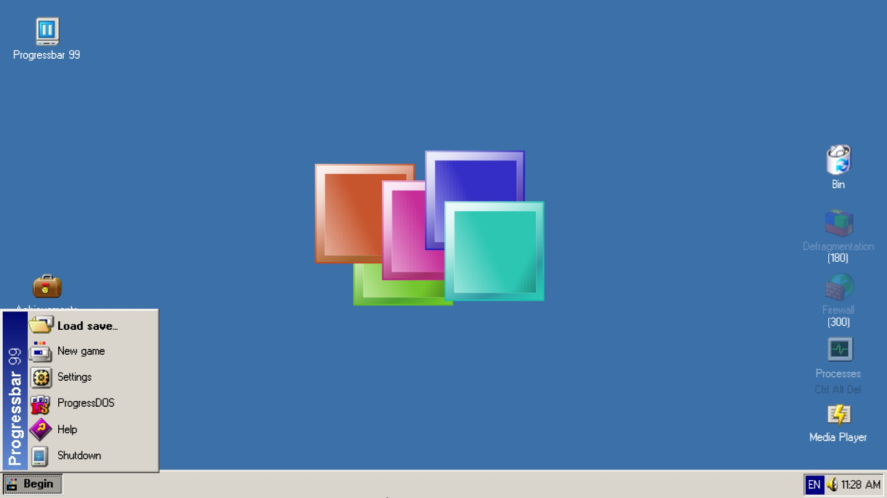
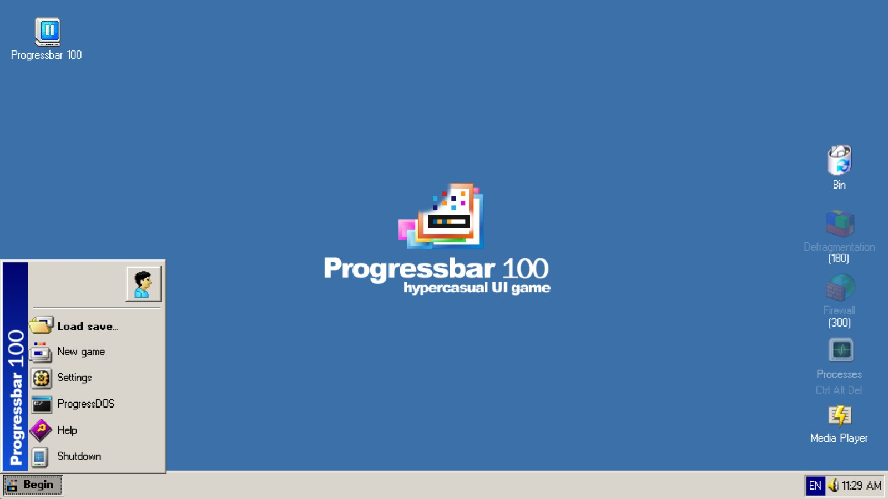

Progressbar WNR
Progressbar WNR is a system pack for Progressbar95 meant to bring certain versions that are part of Windows Never Released (WNR).
Systems
Progressbar 9x
- Progressbar 96
- Progressbar 97
- Progressbar 99
- Progressbar 100
Screenshots
   Changelog
Version 0.1800
- Readded and Improved Progressbar 100
Version 0.1241
- Added Progressolitaire icons for PB96 and 97
- Added a new Processes icon for PB99
Version 0.1240
- Improved wallpapers and themes of PB99
Version 0.1230
- Improved wallpapers and themes of PB96 and 97